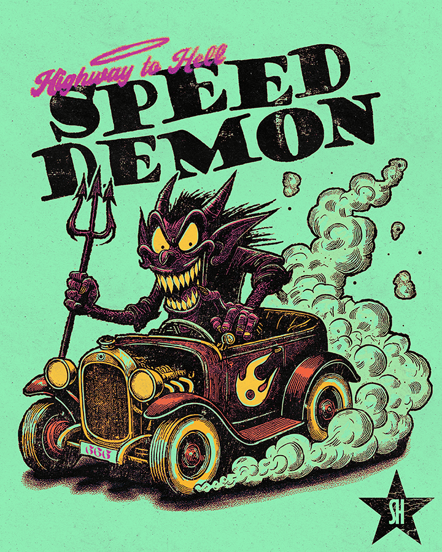

Speed Demon | Sleepyhouse Personal Project
This is a personal project I did for my instagram page and have up for sale on my instagram page. With this project, I wanted to experiment with some range in my design capabilities by trying out a piece of artwork with some inspiration from Ed Roth, who is most famous for his Rat Fink artwork. This project ended up being a lot of fun to work on and I look forward to doing more work like this in the near future!